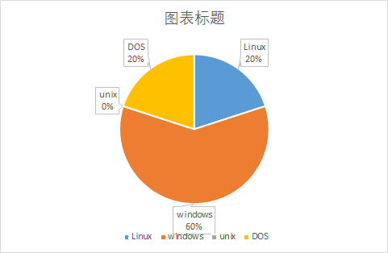
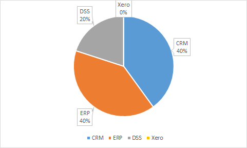
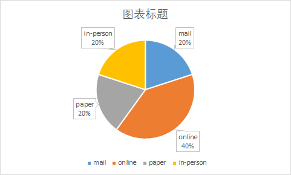

The following are the results of our survey of customers' relevant business needs.
According to the survey question "Which operating system are you used to using", we conclude that Windows system is the most popular system, followed by DOS and Linux.
According to the survey question "Which system do you want to use", we conclude that the most popular ones are ERP and CRM, the same number of people like them, followed by DSS.
According to the survey question"What kind of investigation do you like", we conclude that people prefer online survey, while a samll number prefer email,paper or in-person survey.